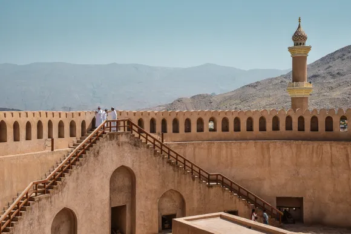

Nizwa Fort

Nizwa Fort is one of Oman's most impressive and well-preserved forts. It was built in the 17th century and was used as a military stronghold and residence for the ruling Imams. Visitors can explore the fort's many rooms and climb to the top for a stunning view of the city and surrounding mountains.
Jebel Akhdar

Jebel Akhdar is a mountain range in the heart of Oman. It is known for its cool climate, stunning scenery, and traditional villages. Visitors can go hiking, rock climbing, or simply relax and enjoy the views. The area is also famous for its rose plantations and production of rose water.
Al Hoota Cave
Al Hoota Cave is one of Oman's most spectacular natural wonders. It is home to a variety of unique rock formations, underground lakes, and rare species of blind fish. Visitors can take a guided tour of the cave and learn about its geology and ecology.
Misfat Al Abryeen
Misfat Al Abryeen is a traditional Omani village located in the mountains near Nizwa. It is known for its beautiful terraced fields, ancient falaj irrigation system, and traditional mud houses. Visitors can explore the village on foot and enjoy the peaceful atmosphere.
Tanuf Ruins

Tanuf Ruins is an ancient city that was abandoned in the 1950s due to a conflict with the Sultan's army. Today, visitors can explore the ruins of the old city, including the crumbling houses, mosque, and watchtower. The site also offers stunning views of the surrounding mountains and the nearby Wadi Tanuf.